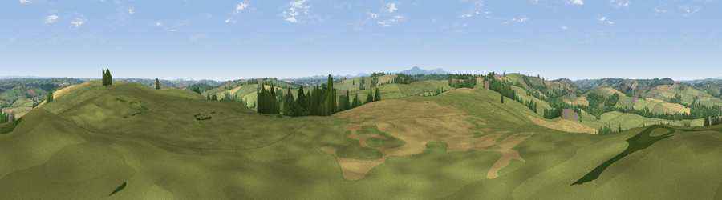

Viewpoint near Zeal Monachorum
#20273 in England · top 34% of its area beats it · near Zeal Monachorum · footpathWhere it is
The exact computed spot (SS 70625 05125). Click the marker for map links.
Public access: a public right of way passes within 15 m of this spot. Computed from Natural England's CRoW access layer and OpenStreetMap rights of way — not the legal definitive map. Always verify locally.
The view, rendered

A 360° render of this exact spot computed from the terrain model, tree cover and land cover — summer colours, afternoon light, calibrated against photographs of famous viewpoints. Real trees, hedges and buildings will differ in detail.
The panorama
Grey silhouette: terrain skyline in each direction (720 bearings, Earth curvature and refraction included). Dashed green: skyline with trees (+15 m) and buildings (+8 m) as obstacles. Blue strip: how far the ground is visible on each bearing.
Where the view opens
Wedge length = distance to the farthest visible ground on that bearing (vegetation-aware). Rings at 10, 25 and 50 km.
What fills the view
72% grassland · 19% cropland · 8% woodland ·
Angular shares of the visible panorama (visual magnitude), not map area. Landscape diversity 0.34 (0–1 Shannon).
Key numbers
More beautiful places nearby
The staircase of upgrades: each row has a higher view potential than everything closer. Driving times are estimates from straight-line distance, calibrated against real road routing — check an actual route before setting out.
| Place | Direction | Drive | Score |
|---|---|---|---|
| Viewpoint near Lapford | NE · 2 km | ~6 min | 53.2 |
| Viewpoint near Bow | SE · 3 km | ~7 min | 57.4 |
| Viewpoint near North Tawton | SSW · 3 km | ~8 min | 58.1 |
| Viewpoint near North Tawton | SW · 3 km | ~8 min | 59.6 |
| Serstone Hill | SE · 4 km | ~9 min | 61.1 |
| Viewpoint near Bondleigh | W · 5 km | ~12 min | 64.0 |
| Viewpoint near Whiddon Down | SSW · 12 km | ~23 min | 67.0 |
| Viewpoint near Whiddon Down | SSW · 13 km | ~23 min | 67.5 |
50.83116, -3.83847 · source: screening · position refined by local search. Computed location — check access rights before visiting.